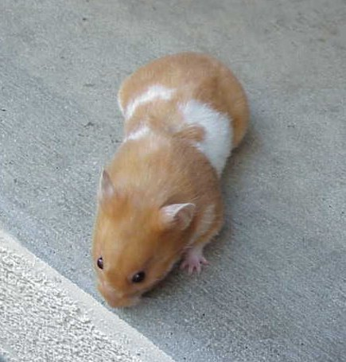

The banded gene is not lethal like the dominant spot gene. A hamster can have either one or two banded genes. If a hamster has two banded genes (having received one from each parent), all of his/her babies will also be banded.
| Banded Syrian Hamsters | ||||||||||||||||||||||
|  | ||||||||||||||||||||||
| Short Haired Cream Banded Female | ||||||||||||||||||||||
| Short Haired Cinnamon Banded Female | ||||||||||||||||||||||
|
||||||||||||||||||||||
| Short Haired Golden Banded Syrian | ||||||||||||||||||||||
|
||||||||||||||||||||||
| Long Haired Dove Banded Tri-colored Female | ||||||||||||||||||||||
| The banded gene is a dominant gene. Being dominant means that a hamster only needs one of these genes, and he will have the banded pattern. It also means that the gene cannot be carried. The banded gene is not lethal like the dominant spot gene. A hamster can have either one or two banded genes. If a hamster has two banded genes (having received one from each parent), all of his/her babies will also be banded. |
||||||||||||||||||||||